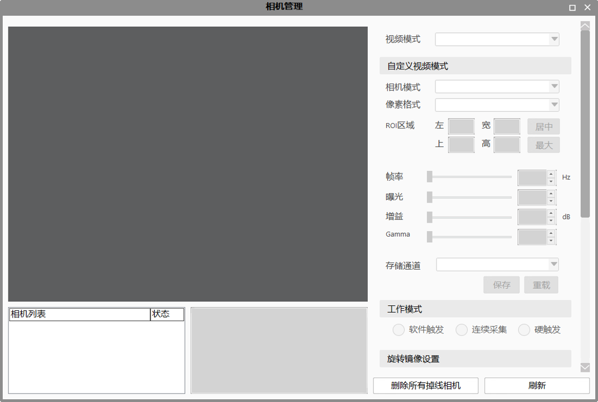

相机工作模式设置工具就是对相机的工作模式进行设置，主要有三种模式：软件触发、连续采集和硬触发。这三种模式分别对应工具的属性里面的工作模式的软触发、连续采集和硬触发。

| 分类 | 参数名称 | 参数描述 |
|---|---|---|
| 属性窗口 | 相机名称 | 相机的序列号名称，即SN。 |
| 工作模式 | 工作模式分为软触发、连续采集和硬触发。 | |
| 图像窗口 | 无 | 无 |
| 数据链 | 无 | 无 |
| 高级界面 | 无 | 无 |
| 分类 | 参数名称 | 参数描述 |
|---|---|---|
| 监视窗口 | 执行结果 | 工具执行结果。 |
| 执行时间 | 工具执行时间。 | |
| 图像窗口 | 执行结果 | 显示工具执行结果，执行成功显示“OK”，执行失败显示“NG”，同监视窗口的执行结果参数。 |
| 数据链 | 无 | 无 |
无
无
参见“\Samples\相机采集相关工具.gvp”。